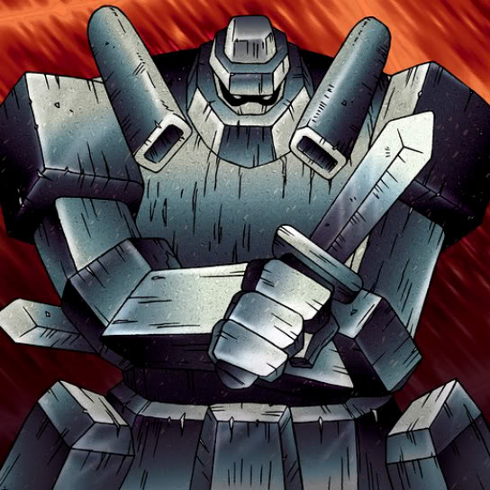

Giant Soldier of Stone

STATS
ATK: 1300
DEF: 2000DECK COST
Deck Cost per Card: 33Fusion List (7 Possible Fusions)
- Giant Soldier of Stone + Blackland Fire Dragon = Stone D.
- Giant Soldier of Stone + Dark Magician Girl = Mystical Sand
- Giant Soldier of Stone + Darkfire Dragon = Stone D.
- Giant Soldier of Stone + Gemini Elf = Mystical Sand
- Giant Soldier of Stone + Koumori Dragon = Stone D.
- Giant Soldier of Stone + Meteor Dragon = Stone D.
- Giant Soldier of Stone + Thunder Nyan Nyan = Mystical Sand